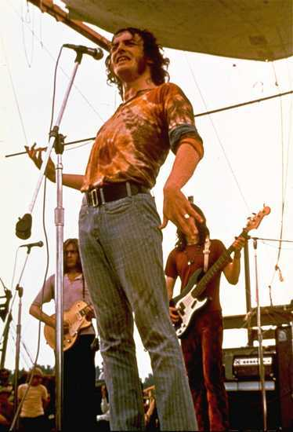
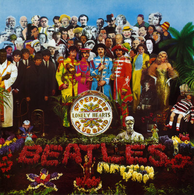

With a Little Help from My Friends, Innovación y Software Libre
Me parece que la primera vez que escuché esta canción fue en la versión de Joe Cocker, la misma que pueden ver en este video en Youtube.
La canción es de los Beatles, de Lennon y McCartney, por supuesto, y originalmente la canta Ringo Starr. Sin embargo, para muchos, incluido yo, la versión de Cocker es superior, incluido yo, pero es cuestión de gustos.

La versión de Cocker es una innovación, con varios cambios con respecto a la versión original, un compas de 6/8, en otra escala, con una introducción instrumental más larga, y varios acordes distintos. A pesar de estos cambios, sigue siendo una versión distinta del trabajo original de los Beatles, no se le considera una creación nueva. A esto, en el caso de la música popular, se le llama cover. Un cover es algo permitido en la música popular, y no debe ser confundido con el plagio (de hecho, algunos han tratado de defender sus plagios a posteriori, argumentado que en realidad trataban de versionar, o hacer un cover).
A mi se me ocurre que este concepto de cover, es una buena forma de explicar lo que pasa con el OpenSource o Software Libre (*), a una persona que no entiende de estos temas, sobre todo si trabaja para la SCD :wink:
“OpenOffice es un cover de Microsoft Office”, hablando en forma metafórica.
Claro que en el caso de la música, para hacer un cover de una canción debes pedir autorización del dueño de los derechos de autor del tema. Ese es el problema con las metáforas, como diría el Dr. House, que nunca son totalmente adecuadas.
Porque en el caso del software puedes duplicar el comportamiento, sin afectar la propiedad intelectual del autor original, basta con que repliques la funcionalidad externa (siempre que ésta no se encuentre patentada), y demostrar que el código que sustenta esta nueva funcionalidad no es el mismo que el original.
Ya hemos comentado antes acerca de la (im)posibilidad de plagiar en software. He insistido en que siempre ha sido considerado algo legítimo el poder duplicar la funcionalidad del software, por eso que las patentes de software son tan criticadas en nuestra industria, porque, entre otras cosas, nos limitan las posibilidades de innovar.

Me gusta el nombre de esa canción: “con una pequeña ayuda de mis amigos”, porque tiene mucho que ver con el tema del desarrollo del software del tipo opensource, o software libre.
Cuando hablamos de proyectos de software libre, sólo aquellos que logran formar una comunidad que lo soporte son los que logran sobrevivir, y tener éxito.
Esa es, en mi opinión, la gran innovación disruptiva del FLOSS. Pero esa es una innovación de otro tipo, el software libre modifica la forma de hacer tecnología, pero no la tecnología en sí misma. Concedo que esto discutible, pero no quiero entrar en esta discusión ideológica o ética sobre el software libre, algo que ya encuentro aburrido a esta altura.
Me interesa explorar hoy en día que pasa con la innovación tecnológica que genera el FLOSS.
Mi punto es este, el software libre es como la versión de Cocker, una innovación, grandiosa para algunos, puede a incluso superar a la versión original, pero la creación original, la innovación disruptiva, no viene del FLOSS, porque el FLOSS es, hasta ahora al menos, un desarrollo reactivo, ante la creación que viene desde otros lados, principalmente el software propietario (o privativo, para ser gramaticalmente correcto).
Creo que los grandes desarrollos disruptivos del FLOSS se han dado en el ámbito de los lenguajes de programación (Perl, Python, PHP), pero todo el resto, ha sido, en general, tomar ideas que fueron desarrolladas en el ámbito propietario, con código cerrado. De hecho, esos desarrollos son reacciones, al hecho de que esos desarrollos disruptivos tengan su código cerrado. Esa es la causa por la que nacen estos proyectos opensource, y su motivación principal, copiar la funcionalidad de un proyecto realmente innovador.
Esta es mi pata de palo que tenía para tirar al fuego hoy :wink:
Por cierto, este es un primer argumento, algo superficial, si quieren, porque hay mucho más que desarrollar, fuentes que citar, estadísticas que mostrar. Al menos tengo otra razón para argumentar por qué el FLOSS no genera mucha innovación disruptiva (según algunos, no innova nada, pero esa no es mi posición), pero esto pienso desarrollarlo más adelante..
Tal como dije ayer, me gustaría aprovechar los blogs para discutir este tema, creo que las discusiones, al final deben iluminarnos a todos. Nunca podremos ponernos de acuerdo totalmente, pero al menos algo aprenderemos en el proceso, todo con la ayuda de nuestros amigos ;).
(*) Pido disculpas anticipadas a los puristas, en este escrito voy a usar los términos opensource y software libre y FLOSS casi en forma intercambiable, estoy totalmente consciente de la diferencia, he escrito código abierto y normalmente he optado por licenciarlo via GPL (software libre), pero no entremos en una discusión de distinciones a lo Richard Stallman, trataré de no abusar de este intercambio de términos.